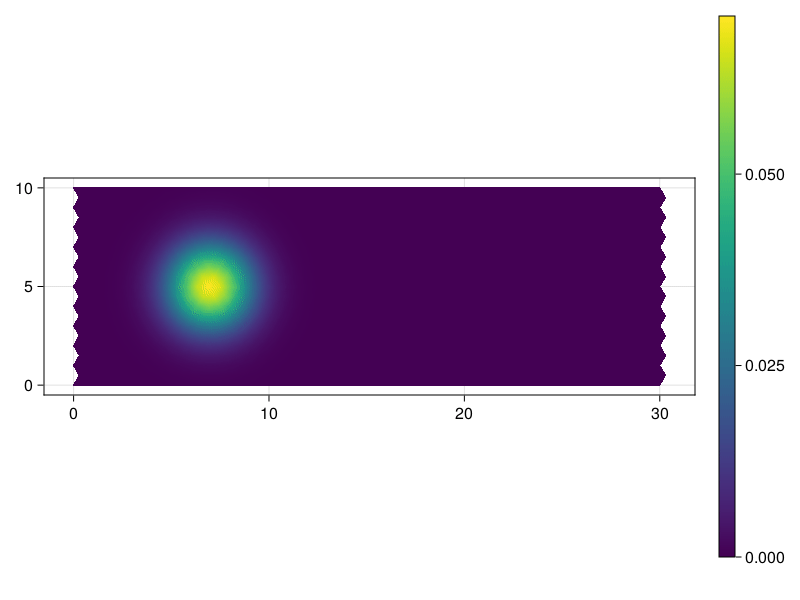

Introduction to Decapodes
Discrete Exterior Calculus Applied to Partial and Ordinary Differential Equations (Decapodes) is a diagrammatic language used to express systems of ordinary and partial differential equations. The Decapode provides a visual framework for understanding the coupling between variables within a PDE or ODE system, and a combinatorial data structure for working with them. Below, we provide a high-level overview of how Decapodes can be generated and interpreted.
Your First Decapode
We begin with the most basic Decapode, one which only includes a single variable. In the Decapode graphical paradigm, nodes represent variables and arrows represent operators which relate variables to each other. Since the Decapode applies this diagrammatic language specifically to the Discrete Exterior Calculus (DEC), variables are typed by the dimension and orientation of the information they contain. So a variable of type Form0 will be the 0-dimensional data points on some space, or in a discrete context, the values defined on points of a mesh. Similarly, Form1 will be values stored on edges of the mesh, and Form2 will be values stored on the surfaces of the mesh. Below, we provide a very simple Decapode with just a single variable C. and define a convenience function for visualization in later examples.
using DiagrammaticEquations
using DiagrammaticEquations.Deca
using Decapodes
using Catlab, Catlab.Graphics
Variable = @decapode begin
C::Form0
end;
to_graphviz(Variable)
-->
<!-- Title: G Pages: 1 -->
<svg width="56pt" height="69pt"
viewBox="0.00 0.00 56.08 69.21" xmlns="http://www.w3.org/2000/svg" xmlns:xlink="http://www.w3.org/1999/xlink">
<g id="graph0" class="graph" transform="scale(1 1) rotate(0) translate(4 65.2132)">
<title>G</title>
<polygon fill="%23ffffff" stroke="transparent" points="-4,4 -4,-65.2132 52.0833,-65.2132 52.0833,4 -4,4"/>
<!-- n1 -->
<g id="node1" class="node">
<title>n1</title>
<ellipse fill="none" stroke="%23000000" cx="24.0416" cy="-10.6066" rx="24.0833" ry="10.7143"/>
<text text-anchor="middle" x="24.0416" y="-6.9066" font-family="Times,serif" font-size="14.00" fill="%23000000">C:Ω₀</text>
</g>
<!-- n2 -->
<g id="node2" class="node">
<title>n2</title>
</g>
<!-- n2&%2345;>n1 -->
<g id="edge1" class="edge">
<title>n2&%2345;>n1</title>
<path fill="none" stroke="%23000000" d="M24.0416,-57.1246C24.0416,-51.9402 24.0416,-38.0886 24.0416,-26.8394"/>
<polygon fill="%23000000" stroke="%23000000" points="25.7917,-26.5754 24.0416,-21.5755 22.2917,-26.5755 25.7917,-26.5754"/>
</g>
<!-- n3 -->
<g id="node3" class="node">
<title>n3</title>
</g>
</g>
</svg>
)
The resulting diagram contains a single node, showing the single variable in this system. We can then add a second variable:
TwoVariables = @decapode begin
C::Form0
dC::Form1
end;
to_graphviz(TwoVariables)
-->
<!-- Title: G Pages: 1 -->
<svg width="134pt" height="69pt"
viewBox="0.00 0.00 134.45 69.21" xmlns="http://www.w3.org/2000/svg" xmlns:xlink="http://www.w3.org/1999/xlink">
<g id="graph0" class="graph" transform="scale(1 1) rotate(0) translate(4 65.2132)">
<title>G</title>
<polygon fill="%23ffffff" stroke="transparent" points="-4,4 -4,-65.2132 130.4472,-65.2132 130.4472,4 -4,4"/>
<!-- n1 -->
<g id="node1" class="node">
<title>n1</title>
<ellipse fill="none" stroke="%23000000" cx="24.0416" cy="-10.6066" rx="24.0833" ry="10.7143"/>
<text text-anchor="middle" x="24.0416" y="-6.9066" font-family="Times,serif" font-size="14.00" fill="%23000000">C:Ω₀</text>
</g>
<!-- n2 -->
<g id="node2" class="node">
<title>n2</title>
<ellipse fill="none" stroke="%23000000" cx="96.0416" cy="-10.6066" rx="30.3115" ry="10.7143"/>
<text text-anchor="middle" x="96.0416" y="-6.9066" font-family="Times,serif" font-size="14.00" fill="%23000000">dC:Ω₁</text>
</g>
<!-- n3 -->
<g id="node3" class="node">
<title>n3</title>
</g>
<!-- n3&%2345;>n1 -->
<g id="edge1" class="edge">
<title>n3&%2345;>n1</title>
<path fill="none" stroke="%23000000" d="M58.4948,-57.1246C54.4194,-51.6222 43.1133,-36.3568 34.5549,-24.8014"/>
<polygon fill="%23000000" stroke="%23000000" points="35.9268,-23.7134 31.5446,-20.737 33.1142,-25.7965 35.9268,-23.7134"/>
</g>
<!-- n3&%2345;>n2 -->
<g id="edge2" class="edge">
<title>n3&%2345;>n2</title>
<path fill="none" stroke="%23000000" d="M61.5885,-57.1246C65.6159,-51.6869 76.705,-36.7147 85.2252,-25.2108"/>
<polygon fill="%23000000" stroke="%23000000" points="86.6605,-26.2131 88.2302,-21.1535 83.848,-24.1299 86.6605,-26.2131"/>
</g>
<!-- n4 -->
<g id="node4" class="node">
<title>n4</title>
</g>
</g>
</svg>
)
And then can add some relationship between them. In this case, we make an equation which states that dC is the discrete derivative of C:
Equation = @decapode begin
C::Form0
dC::Form1
dC == d₀(C)
end;
to_graphviz(Equation)
-->
<!-- Title: G Pages: 1 -->
<svg width="69pt" height="142pt"
viewBox="0.00 0.00 68.81 142.43" xmlns="http://www.w3.org/2000/svg" xmlns:xlink="http://www.w3.org/1999/xlink">
<g id="graph0" class="graph" transform="scale(1 1) rotate(0) translate(4 138.4264)">
<title>G</title>
<polygon fill="%23ffffff" stroke="transparent" points="-4,4 -4,-138.4264 64.8112,-138.4264 64.8112,4 -4,4"/>
<!-- n1 -->
<g id="node1" class="node">
<title>n1</title>
<ellipse fill="none" stroke="%23000000" cx="30.4056" cy="-82.8198" rx="24.0833" ry="10.7143"/>
<text text-anchor="middle" x="30.4056" y="-79.1198" font-family="Times,serif" font-size="14.00" fill="%23000000">C:Ω₀</text>
</g>
<!-- n2 -->
<g id="node2" class="node">
<title>n2</title>
<ellipse fill="none" stroke="%23000000" cx="30.4056" cy="-10.6066" rx="30.3115" ry="10.7143"/>
<text text-anchor="middle" x="30.4056" y="-6.9066" font-family="Times,serif" font-size="14.00" fill="%23000000">dC:Ω₁</text>
</g>
<!-- n1&%2345;>n2 -->
<g id="edge2" class="edge">
<title>n1&%2345;>n2</title>
<path fill="none" stroke="%23000000" d="M30.4056,-72.1645C30.4056,-60.1114 30.4056,-40.3593 30.4056,-26.4873"/>
<polygon fill="%23000000" stroke="%23000000" points="32.1557,-26.3056 30.4056,-21.3056 28.6557,-26.3057 32.1557,-26.3056"/>
<text text-anchor="middle" x="38.4056" y="-43.0132" font-family="Times,serif" font-size="14.00" fill="%23000000">d₀</text>
</g>
<!-- n3 -->
<g id="node3" class="node">
<title>n3</title>
</g>
<!-- n3&%2345;>n1 -->
<g id="edge1" class="edge">
<title>n3&%2345;>n1</title>
<path fill="none" stroke="%23000000" d="M30.4056,-130.2949C30.4056,-124.8913 30.4056,-110.2625 30.4056,-98.6584"/>
<polygon fill="%23000000" stroke="%23000000" points="32.1557,-98.5837 30.4056,-93.5837 28.6557,-98.5837 32.1557,-98.5837"/>
</g>
<!-- n4 -->
<g id="node4" class="node">
<title>n4</title>
</g>
</g>
</svg>
)
Here, the two nodes represent the two variables, and the arrow between them shows how they are related by the discrete derivative.
A Little More Complicated
Now that we've seen how to construct a simple equation, it's time to move on to some actual PDE systems! One classic PDE example is the diffusion equation. This equation states that the change of concentration at each point is proportional to the Laplacian of the concentration.
Diffusion = @decapode begin
(C, Ċ)::Form0
ϕ::Form1
# Fick's first law
ϕ == k(d₀(C))
# Diffusion equation
Ċ == ⋆₀⁻¹(dual_d₁(⋆₁(ϕ)))
∂ₜ(C) == Ċ
end;
to_graphviz(Diffusion)
-->
<!-- Title: G Pages: 1 -->
<svg width="128pt" height="472pt"
viewBox="0.00 0.00 128.04 472.28" xmlns="http://www.w3.org/2000/svg" xmlns:xlink="http://www.w3.org/1999/xlink">
<g id="graph0" class="graph" transform="scale(1 1) rotate(0) translate(4 468.2792)">
<title>G</title>
<polygon fill="%23ffffff" stroke="transparent" points="-4,4 -4,-468.2792 124.0416,-468.2792 124.0416,4 -4,4"/>
<!-- n1 -->
<g id="node1" class="node">
<title>n1</title>
<ellipse fill="none" stroke="%23000000" cx="24.0416" cy="-412.6726" rx="24.0833" ry="10.7143"/>
<text text-anchor="middle" x="24.0416" y="-408.9726" font-family="Times,serif" font-size="14.00" fill="%23000000">C:Ω₀</text>
</g>
<!-- n2 -->
<g id="node2" class="node">
<title>n2</title>
<ellipse fill="none" stroke="%23000000" cx="24.0416" cy="-51.6066" rx="24.0833" ry="10.7143"/>
<text text-anchor="middle" x="24.0416" y="-47.9066" font-family="Times,serif" font-size="14.00" fill="%23000000">Ċ:Ω₀</text>
</g>
<!-- n1&%2345;>n2 -->
<g id="edge8" class="edge">
<title>n1&%2345;>n2</title>
<path fill="none" stroke="%23000000" d="M20.1685,-402.0691C15.4332,-388.1339 8.0416,-362.8029 8.0416,-340.4594 8.0416,-340.4594 8.0416,-340.4594 8.0416,-123.8198 8.0416,-103.9202 13.9047,-81.6508 18.5325,-67.1727"/>
<polygon fill="%23000000" stroke="%23000000" points="20.2651,-67.5066 20.1685,-62.2101 16.941,-66.4108 20.2651,-67.5066"/>
<text text-anchor="middle" x="14.0416" y="-228.4396" font-family="Times,serif" font-size="14.00" fill="%23000000">∂ₜ</text>
</g>
<!-- n5 -->
<g id="node5" class="node">
<title>n5</title>
<ellipse fill="none" stroke="%23000000" cx="66.0416" cy="-340.4594" rx="30.3115" ry="10.7143"/>
<text text-anchor="middle" x="66.0416" y="-336.7594" font-family="Times,serif" font-size="14.00" fill="%23000000">•2:Ω•</text>
</g>
<!-- n1&%2345;>n5 -->
<g id="edge3" class="edge">
<title>n1&%2345;>n5</title>
<path fill="none" stroke="%23000000" d="M30.0592,-402.3262C37.151,-390.1329 48.9994,-369.7612 57.1505,-355.7464"/>
<polygon fill="%23000000" stroke="%23000000" points="58.7598,-356.4603 59.7609,-351.2583 55.7343,-354.7006 58.7598,-356.4603"/>
<text text-anchor="middle" x="56.0416" y="-372.866" font-family="Times,serif" font-size="14.00" fill="%23000000">d₀</text>
</g>
<!-- n8 -->
<g id="node8" class="node">
<title>n8</title>
</g>
<!-- n2&%2345;>n8 -->
<g id="edge2" class="edge">
<title>n2&%2345;>n8</title>
<path fill="none" stroke="%23000000" d="M24.0416,-40.5973C24.0416,-31.135 24.0416,-17.7454 24.0416,-9.4807"/>
<polygon fill="%23000000" stroke="%23000000" points="25.7917,-9.3096 24.0416,-4.3096 22.2917,-9.3096 25.7917,-9.3096"/>
</g>
<!-- n3 -->
<g id="node3" class="node">
<title>n3</title>
<ellipse fill="none" stroke="%23000000" cx="66.0416" cy="-268.2462" rx="23.1702" ry="10.7143"/>
<text text-anchor="middle" x="66.0416" y="-264.5462" font-family="Times,serif" font-size="14.00" fill="%23000000">ϕ:Ω₁</text>
</g>
<!-- n6 -->
<g id="node6" class="node">
<title>n6</title>
<ellipse fill="none" stroke="%23000000" cx="66.0416" cy="-196.033" rx="30.3115" ry="10.7143"/>
<text text-anchor="middle" x="66.0416" y="-192.333" font-family="Times,serif" font-size="14.00" fill="%23000000">•3:Ω•</text>
</g>
<!-- n3&%2345;>n6 -->
<g id="edge5" class="edge">
<title>n3&%2345;>n6</title>
<path fill="none" stroke="%23000000" d="M66.0416,-257.5909C66.0416,-245.5378 66.0416,-225.7857 66.0416,-211.9137"/>
<polygon fill="%23000000" stroke="%23000000" points="67.7917,-211.732 66.0416,-206.732 64.2917,-211.7321 67.7917,-211.732"/>
<text text-anchor="middle" x="74.0416" y="-228.4396" font-family="Times,serif" font-size="14.00" fill="%23000000">⋆₁</text>
</g>
<!-- n4 -->
<g id="node4" class="node">
<title>n4</title>
<ellipse fill="none" stroke="%23000000" cx="66.0416" cy="-123.8198" rx="30.3115" ry="10.7143"/>
<text text-anchor="middle" x="66.0416" y="-120.1198" font-family="Times,serif" font-size="14.00" fill="%23000000">•1:Ω•</text>
</g>
<!-- n4&%2345;>n2 -->
<g id="edge7" class="edge">
<title>n4&%2345;>n2</title>
<path fill="none" stroke="%23000000" d="M59.8444,-113.1645C52.7101,-100.898 40.9381,-80.6577 32.8529,-66.7563"/>
<polygon fill="%23000000" stroke="%23000000" points="34.2909,-65.7479 30.2643,-62.3056 31.2654,-67.5076 34.2909,-65.7479"/>
<text text-anchor="middle" x="62.5416" y="-84.0132" font-family="Times,serif" font-size="14.00" fill="%23000000">⋆₀⁻¹</text>
</g>
<!-- n5&%2345;>n3 -->
<g id="edge4" class="edge">
<title>n5&%2345;>n3</title>
<path fill="none" stroke="%23000000" d="M66.0416,-329.8041C66.0416,-317.751 66.0416,-297.9989 66.0416,-284.1269"/>
<polygon fill="%23000000" stroke="%23000000" points="67.7917,-283.9452 66.0416,-278.9452 64.2917,-283.9453 67.7917,-283.9452"/>
<text text-anchor="middle" x="71.0416" y="-300.6528" font-family="Times,serif" font-size="14.00" fill="%23000000">k</text>
</g>
<!-- n6&%2345;>n4 -->
<g id="edge6" class="edge">
<title>n6&%2345;>n4</title>
<path fill="none" stroke="%23000000" d="M66.0416,-185.3777C66.0416,-173.3246 66.0416,-153.5725 66.0416,-139.7005"/>
<polygon fill="%23000000" stroke="%23000000" points="67.7917,-139.5188 66.0416,-134.5188 64.2917,-139.5189 67.7917,-139.5188"/>
<text text-anchor="middle" x="93.0416" y="-156.2264" font-family="Times,serif" font-size="14.00" fill="%23000000">dual_d₁</text>
</g>
<!-- n7 -->
<g id="node7" class="node">
<title>n7</title>
</g>
<!-- n7&%2345;>n1 -->
<g id="edge1" class="edge">
<title>n7&%2345;>n1</title>
<path fill="none" stroke="%23000000" d="M24.0416,-460.1477C24.0416,-454.7442 24.0416,-440.1153 24.0416,-428.5112"/>
<polygon fill="%23000000" stroke="%23000000" points="25.7917,-428.4365 24.0416,-423.4365 22.2917,-428.4365 25.7917,-428.4365"/>
</g>
</g>
</svg>
)
The resulting Decapode shows the relationships between the three variables with the triangle diagram. Note that these diagrams are automatically layed-out by Graphviz.
Bring in the Dynamics
Now that we have a reasonably complex PDE, we can demonstrate some of the developed tooling for actually solving the PDE. Currently, the tooling will automatically generate an explicit method for solving the system (using DifferentialEquations.jl to handle time-stepping and instability detection).
We begin this process by importing a mesh. The mesh has been pre-generated within CombinatorialSpaces, and is generated such that it has periodic boundary conditions. We will also upload a non-periodic mesh for the sake of visualization, as well as a mapping between the points on the periodic and non-periodic meshes.
See CombinatorialSpaces.jl for mesh construction and importing utilities.
using Catlab.CategoricalAlgebra
using CombinatorialSpaces, CombinatorialSpaces.DiscreteExteriorCalculus
using CairoMakie
plot_mesh = loadmesh(Rectangle_30x10())
periodic_mesh = loadmesh(Torus_30x10())
point_map = loadmesh(Point_Map())
fig, ax, ob = wireframe(plot_mesh)
ax.aspect = AxisAspect(3.0)
fig
With the mesh uploaded, we also need to convert the Decapode into something which can be scheduled with explicit time stepping. In order to do this, we take every variable which is the time derivative of another variable and trace back the operations needed to compute this. This process essentially generates a computation graph in the form of a directed wiring diagram.
Since our diagram is already defined, we just need to define a function which implements each of these symbolic operators and pass them to a scheduler for generating the function.
Note that we chose to define k as a function that multiplies by a value k. We could have alternately chosen to represent k as a Constant that we multiply by in the Decapode itself.
using MLStyle
function generate(sd, my_symbol; hodge=DiagonalHodge())
op = @match my_symbol begin
:k => x -> 0.05*x
x => error("Unmatched operator $my_symbol")
end
return (args...) -> op(args...)
endgenerate (generic function with 1 method)Next, we generate the simulation function using gen_sim and set up our initial conditions for this problem.
sim = eval(gensim(Diffusion))
fₘ = sim(periodic_mesh, generate, DiagonalHodge())
using Distributions
c_dist = MvNormal([7, 5], [1.5, 1.5])
c = [pdf(c_dist, [p[1], p[2]]) for p in periodic_mesh[:point]]
fig, ax, ob = mesh(plot_mesh; color=c[point_map])
ax.aspect = AxisAspect(3.0)
fig
Finally, we solve this PDE problem using the Tsit5() solver and generate an animation of the result!
using LinearAlgebra
using ComponentArrays
using OrdinaryDiffEq
u₀ = ComponentArray(C=c)
prob = ODEProblem(fₘ, u₀, (0.0, 100.0))
sol = solve(prob, Tsit5());
# Plot the result
times = range(0.0, 100.0, length=150)
colors = [sol(t).C[point_map] for t in times]
# Initial frame
fig, ax, ob = mesh(plot_mesh, color=colors[1], colorrange = extrema(vcat(colors...)))
ax.aspect = AxisAspect(3.0)
Colorbar(fig[1,2], ob)
framerate = 30
# Animation
record(fig, "diffusion.gif", range(0.0, 100.0; length=150); framerate = 30) do t
ob.color = sol(t).C[point_map]
end"diffusion.gif"
Merging Multiple Physics
Now that we've seen the basic pipeline, it's time for a more complex example that demonstrates some of the benefits reaped from using Catlab.jl as the backend to our data structures. In this example, we will take two separate physics (diffusion and advection), and combine them together using a higher-level composition pattern.
We begin by defining the three systems we need. The first two systems are the relationships between concentration and flux under diffusion and advection respectively. The third is the relationship between the two fluxes and the change of concentration under superposition of fluxes.
Diffusion = @decapode begin
C::Form0
ϕ::Form1
# Fick's first law
ϕ == k(d₀(C))
end
Advection = @decapode begin
C::Form0
ϕ::Form1
V::Form1
ϕ == ∧₀₁(C,V)
end
Superposition = @decapode begin
(C, Ċ)::Form0
(ϕ, ϕ₁, ϕ₂)::Form1
ϕ == ϕ₁ + ϕ₂
Ċ == ⋆₀⁻¹(dual_d₁(⋆₁(ϕ)))
∂ₜ(C) == Ċ
endtrueto_graphviz(Diffusion)
-->
<!-- Title: G Pages: 1 -->
<svg width="69pt" height="215pt"
viewBox="0.00 0.00 68.81 214.64" xmlns="http://www.w3.org/2000/svg" xmlns:xlink="http://www.w3.org/1999/xlink">
<g id="graph0" class="graph" transform="scale(1 1) rotate(0) translate(4 210.6396)">
<title>G</title>
<polygon fill="%23ffffff" stroke="transparent" points="-4,4 -4,-210.6396 64.8112,-210.6396 64.8112,4 -4,4"/>
<!-- n1 -->
<g id="node1" class="node">
<title>n1</title>
<ellipse fill="none" stroke="%23000000" cx="30.4056" cy="-155.033" rx="24.0833" ry="10.7143"/>
<text text-anchor="middle" x="30.4056" y="-151.333" font-family="Times,serif" font-size="14.00" fill="%23000000">C:Ω₀</text>
</g>
<!-- n3 -->
<g id="node3" class="node">
<title>n3</title>
<ellipse fill="none" stroke="%23000000" cx="30.4056" cy="-82.8198" rx="30.3115" ry="10.7143"/>
<text text-anchor="middle" x="30.4056" y="-79.1198" font-family="Times,serif" font-size="14.00" fill="%23000000">•1:Ω•</text>
</g>
<!-- n1&%2345;>n3 -->
<g id="edge2" class="edge">
<title>n1&%2345;>n3</title>
<path fill="none" stroke="%23000000" d="M30.4056,-144.3777C30.4056,-132.3246 30.4056,-112.5725 30.4056,-98.7005"/>
<polygon fill="%23000000" stroke="%23000000" points="32.1557,-98.5188 30.4056,-93.5188 28.6557,-98.5189 32.1557,-98.5188"/>
<text text-anchor="middle" x="38.4056" y="-115.2264" font-family="Times,serif" font-size="14.00" fill="%23000000">d₀</text>
</g>
<!-- n2 -->
<g id="node2" class="node">
<title>n2</title>
<ellipse fill="none" stroke="%23000000" cx="30.4056" cy="-10.6066" rx="23.1702" ry="10.7143"/>
<text text-anchor="middle" x="30.4056" y="-6.9066" font-family="Times,serif" font-size="14.00" fill="%23000000">ϕ:Ω₁</text>
</g>
<!-- n3&%2345;>n2 -->
<g id="edge3" class="edge">
<title>n3&%2345;>n2</title>
<path fill="none" stroke="%23000000" d="M30.4056,-72.1645C30.4056,-60.1114 30.4056,-40.3593 30.4056,-26.4873"/>
<polygon fill="%23000000" stroke="%23000000" points="32.1557,-26.3056 30.4056,-21.3056 28.6557,-26.3057 32.1557,-26.3056"/>
<text text-anchor="middle" x="35.4056" y="-43.0132" font-family="Times,serif" font-size="14.00" fill="%23000000">k</text>
</g>
<!-- n4 -->
<g id="node4" class="node">
<title>n4</title>
</g>
<!-- n4&%2345;>n1 -->
<g id="edge1" class="edge">
<title>n4&%2345;>n1</title>
<path fill="none" stroke="%23000000" d="M30.4056,-202.5081C30.4056,-197.1045 30.4056,-182.4757 30.4056,-170.8716"/>
<polygon fill="%23000000" stroke="%23000000" points="32.1557,-170.7969 30.4056,-165.7969 28.6557,-170.7969 32.1557,-170.7969"/>
</g>
<!-- n5 -->
<g id="node5" class="node">
<title>n5</title>
</g>
</g>
</svg>
)
to_graphviz(Advection)
-->
<!-- Title: G Pages: 1 -->
<svg width="120pt" height="208pt"
viewBox="0.00 0.00 119.67 208.43" xmlns="http://www.w3.org/2000/svg" xmlns:xlink="http://www.w3.org/1999/xlink">
<g id="graph0" class="graph" transform="scale(1 1) rotate(0) translate(4 204.4264)">
<title>G</title>
<polygon fill="%23ffffff" stroke="transparent" points="-4,4 -4,-204.4264 115.669,-204.4264 115.669,4 -4,4"/>
<!-- n1 -->
<g id="node1" class="node">
<title>n1</title>
<ellipse fill="none" stroke="%23000000" cx="24.0416" cy="-148.8198" rx="24.0833" ry="10.7143"/>
<text text-anchor="middle" x="24.0416" y="-145.1198" font-family="Times,serif" font-size="14.00" fill="%23000000">C:Ω₀</text>
</g>
<!-- n6 -->
<g id="node6" class="node">
<title>n6</title>
<polygon fill="none" stroke="%23000000" points="80.5416,-87.2132 31.5416,-87.2132 31.5416,-72.2132 80.5416,-72.2132 80.5416,-87.2132"/>
<text text-anchor="middle" x="56.0416" y="-76.0132" font-family="Times,serif" font-size="14.00" fill="%23000000">Ω₀×Ω₁</text>
</g>
<!-- n1&%2345;>n6 -->
<g id="edge3" class="edge">
<title>n1&%2345;>n6</title>
<path fill="none" stroke="%23000000" stroke-dasharray="5,2" d="M28.7814,-138.4099C32.8159,-129.5671 38.7776,-116.5434 44.0416,-105.2132 46.0568,-100.8758 48.2826,-96.1329 50.2644,-91.9265"/>
<polygon fill="%23000000" stroke="%23000000" points="51.9004,-92.5602 52.4516,-87.2915 48.7351,-91.0665 51.9004,-92.5602"/>
<text text-anchor="middle" x="52.0416" y="-109.0132" font-family="Times,serif" font-size="14.00" fill="%23000000">π₁</text>
</g>
<!-- n2 -->
<g id="node2" class="node">
<title>n2</title>
<ellipse fill="none" stroke="%23000000" cx="56.0416" cy="-10.6066" rx="23.1702" ry="10.7143"/>
<text text-anchor="middle" x="56.0416" y="-6.9066" font-family="Times,serif" font-size="14.00" fill="%23000000">ϕ:Ω₁</text>
</g>
<!-- n3 -->
<g id="node3" class="node">
<title>n3</title>
<ellipse fill="none" stroke="%23000000" cx="89.0416" cy="-148.8198" rx="22.7556" ry="10.7143"/>
<text text-anchor="middle" x="89.0416" y="-145.1198" font-family="Times,serif" font-size="14.00" fill="%23000000">V:Ω₁</text>
</g>
<!-- n3&%2345;>n6 -->
<g id="edge4" class="edge">
<title>n3&%2345;>n6</title>
<path fill="none" stroke="%23000000" stroke-dasharray="5,2" d="M84.0296,-138.324C78.1083,-125.9239 68.2683,-105.3176 61.9728,-92.1339"/>
<polygon fill="%23000000" stroke="%23000000" points="63.4044,-91.0706 59.6706,-87.3127 60.246,-92.5788 63.4044,-91.0706"/>
<text text-anchor="middle" x="82.0416" y="-109.0132" font-family="Times,serif" font-size="14.00" fill="%23000000">π₂</text>
</g>
<!-- n4 -->
<g id="node4" class="node">
<title>n4</title>
</g>
<!-- n4&%2345;>n1 -->
<g id="edge1" class="edge">
<title>n4&%2345;>n1</title>
<path fill="none" stroke="%23000000" d="M54.6666,-196.2949C51.0759,-190.7285 41.17,-175.3724 33.5875,-163.6179"/>
<polygon fill="%23000000" stroke="%23000000" points="34.8919,-162.4116 30.7109,-159.1586 31.9508,-164.3089 34.8919,-162.4116"/>
</g>
<!-- n4&%2345;>n3 -->
<g id="edge2" class="edge">
<title>n4&%2345;>n3</title>
<path fill="none" stroke="%23000000" d="M57.4596,-196.2949C61.1625,-190.7285 71.378,-175.3724 79.1975,-163.6179"/>
<polygon fill="%23000000" stroke="%23000000" points="80.8516,-164.2909 82.1639,-159.1586 77.9374,-162.3523 80.8516,-164.2909"/>
</g>
<!-- n5 -->
<g id="node5" class="node">
<title>n5</title>
</g>
<!-- n6&%2345;>n2 -->
<g id="edge5" class="edge">
<title>n6&%2345;>n2</title>
<path fill="none" stroke="%23000000" d="M56.0416,-72.0535C56.0416,-61.1331 56.0416,-40.8335 56.0416,-26.5626"/>
<polygon fill="%23000000" stroke="%23000000" points="57.7917,-26.2342 56.0416,-21.2342 54.2917,-26.2342 57.7917,-26.2342"/>
<text text-anchor="middle" x="67.5416" y="-43.0132" font-family="Times,serif" font-size="14.00" fill="%23000000">∧₀₁</text>
</g>
</g>
</svg>
)
to_graphviz(Superposition)
-->
<!-- Title: G Pages: 1 -->
<svg width="189pt" height="484pt"
viewBox="0.00 0.00 188.62 484.15" xmlns="http://www.w3.org/2000/svg" xmlns:xlink="http://www.w3.org/1999/xlink">
<g id="graph0" class="graph" transform="scale(1 1) rotate(0) translate(4 480.1493)">
<title>G</title>
<polygon fill="%23ffffff" stroke="transparent" points="-4,4 -4,-480.1493 184.6188,-480.1493 184.6188,4 -4,4"/>
<!-- n1 -->
<g id="node1" class="node">
<title>n1</title>
<ellipse fill="none" stroke="%23000000" cx="24.0416" cy="-385.3295" rx="24.0833" ry="10.7143"/>
<text text-anchor="middle" x="24.0416" y="-381.6295" font-family="Times,serif" font-size="14.00" fill="%23000000">C:Ω₀</text>
</g>
<!-- n2 -->
<g id="node2" class="node">
<title>n2</title>
<ellipse fill="none" stroke="%23000000" cx="40.0416" cy="-51.6066" rx="24.0833" ry="10.7143"/>
<text text-anchor="middle" x="40.0416" y="-47.9066" font-family="Times,serif" font-size="14.00" fill="%23000000">Ċ:Ω₀</text>
</g>
<!-- n1&%2345;>n2 -->
<g id="edge8" class="edge">
<title>n1&%2345;>n2</title>
<path fill="none" stroke="%23000000" d="M24.0416,-374.5886C24.0416,-359.081 24.0416,-329.5174 24.0416,-304.3528 24.0416,-304.3528 24.0416,-304.3528 24.0416,-123.8198 24.0416,-103.9202 29.9047,-81.6508 34.5325,-67.1727"/>
<polygon fill="%23000000" stroke="%23000000" points="36.2651,-67.5066 36.1685,-62.2101 32.941,-66.4108 36.2651,-67.5066"/>
<text text-anchor="middle" x="30.0416" y="-228.4396" font-family="Times,serif" font-size="14.00" fill="%23000000">∂ₜ</text>
</g>
<!-- n9 -->
<g id="node9" class="node">
<title>n9</title>
</g>
<!-- n2&%2345;>n9 -->
<g id="edge4" class="edge">
<title>n2&%2345;>n9</title>
<path fill="none" stroke="%23000000" d="M40.0416,-40.5973C40.0416,-31.135 40.0416,-17.7454 40.0416,-9.4807"/>
<polygon fill="%23000000" stroke="%23000000" points="41.7917,-9.3096 40.0416,-4.3096 38.2917,-9.3096 41.7917,-9.3096"/>
</g>
<!-- n3 -->
<g id="node3" class="node">
<title>n3</title>
<ellipse fill="none" stroke="%23000000" cx="103.0416" cy="-268.2462" rx="23.1702" ry="10.7143"/>
<text text-anchor="middle" x="103.0416" y="-264.5462" font-family="Times,serif" font-size="14.00" fill="%23000000">ϕ:Ω₁</text>
</g>
<!-- n7 -->
<g id="node7" class="node">
<title>n7</title>
<ellipse fill="none" stroke="%23000000" cx="103.0416" cy="-196.033" rx="30.3115" ry="10.7143"/>
<text text-anchor="middle" x="103.0416" y="-192.333" font-family="Times,serif" font-size="14.00" fill="%23000000">•1:Ω•</text>
</g>
<!-- n3&%2345;>n7 -->
<g id="edge5" class="edge">
<title>n3&%2345;>n7</title>
<path fill="none" stroke="%23000000" d="M103.0416,-257.5909C103.0416,-245.5378 103.0416,-225.7857 103.0416,-211.9137"/>
<polygon fill="%23000000" stroke="%23000000" points="104.7917,-211.732 103.0416,-206.732 101.2917,-211.7321 104.7917,-211.732"/>
<text text-anchor="middle" x="111.0416" y="-228.4396" font-family="Times,serif" font-size="14.00" fill="%23000000">⋆₁</text>
</g>
<!-- n4 -->
<g id="node4" class="node">
<title>n4</title>
<ellipse fill="none" stroke="%23000000" cx="80.0416" cy="-424.5427" rx="27.6545" ry="10.7143"/>
<text text-anchor="middle" x="80.0416" y="-420.8427" font-family="Times,serif" font-size="14.00" fill="%23000000">ϕ₁:Ω₁</text>
</g>
<!-- n10 -->
<g id="node10" class="node">
<title>n10</title>
<ellipse fill="none" stroke="%23000000" cx="103.0416" cy="-343.2878" rx="13.3704" ry="13.3704"/>
<text text-anchor="middle" x="103.0416" y="-339.5878" font-family="Times,serif" font-size="14.00" fill="%23000000">Σ1</text>
</g>
<!-- n4&%2345;>n10 -->
<g id="edge10" class="edge">
<title>n4&%2345;>n10</title>
<path fill="none" stroke="%23000000" stroke-dasharray="5,2" d="M83.0485,-413.92C86.8118,-400.6249 93.3168,-377.6438 97.8823,-361.5148"/>
<polygon fill="%23000000" stroke="%23000000" points="99.6715,-361.6192 99.3495,-356.3316 96.3038,-360.6659 99.6715,-361.6192"/>
</g>
<!-- n5 -->
<g id="node5" class="node">
<title>n5</title>
<ellipse fill="none" stroke="%23000000" cx="153.0416" cy="-424.5427" rx="27.6545" ry="10.7143"/>
<text text-anchor="middle" x="153.0416" y="-420.8427" font-family="Times,serif" font-size="14.00" fill="%23000000">ϕ₂:Ω₁</text>
</g>
<!-- n5&%2345;>n10 -->
<g id="edge11" class="edge">
<title>n5&%2345;>n10</title>
<path fill="none" stroke="%23000000" stroke-dasharray="5,2" d="M146.505,-413.92C137.9396,-400.0004 122.841,-375.4637 112.8881,-359.2893"/>
<polygon fill="%23000000" stroke="%23000000" points="114.3379,-358.306 110.227,-354.9648 111.357,-360.1403 114.3379,-358.306"/>
</g>
<!-- n6 -->
<g id="node6" class="node">
<title>n6</title>
<ellipse fill="none" stroke="%23000000" cx="103.0416" cy="-123.8198" rx="50.8235" ry="10.7143"/>
<text text-anchor="middle" x="103.0416" y="-120.1198" font-family="Times,serif" font-size="14.00" fill="%23000000">sum_1:Ω•</text>
</g>
<!-- n6&%2345;>n2 -->
<g id="edge7" class="edge">
<title>n6&%2345;>n2</title>
<path fill="none" stroke="%23000000" d="M93.7458,-113.1645C82.8272,-100.6492 64.6669,-79.8331 52.5272,-65.9181"/>
<polygon fill="%23000000" stroke="%23000000" points="53.5734,-64.4553 48.9677,-61.838 50.936,-66.7562 53.5734,-64.4553"/>
<text text-anchor="middle" x="92.5416" y="-84.0132" font-family="Times,serif" font-size="14.00" fill="%23000000">⋆₀⁻¹</text>
</g>
<!-- n7&%2345;>n6 -->
<g id="edge6" class="edge">
<title>n7&%2345;>n6</title>
<path fill="none" stroke="%23000000" d="M103.0416,-185.3777C103.0416,-173.3246 103.0416,-153.5725 103.0416,-139.7005"/>
<polygon fill="%23000000" stroke="%23000000" points="104.7917,-139.5188 103.0416,-134.5188 101.2917,-139.5189 104.7917,-139.5188"/>
<text text-anchor="middle" x="130.0416" y="-156.2264" font-family="Times,serif" font-size="14.00" fill="%23000000">dual_d₁</text>
</g>
<!-- n8 -->
<g id="node8" class="node">
<title>n8</title>
</g>
<!-- n8&%2345;>n1 -->
<g id="edge1" class="edge">
<title>n8&%2345;>n1</title>
<path fill="none" stroke="%23000000" d="M77.7176,-472.283C71.3449,-467.0566 53.3817,-451.5792 43.0416,-435.1493 36.4076,-424.6082 31.4986,-411.3857 28.3339,-401.2121"/>
<polygon fill="%23000000" stroke="%23000000" points="29.945,-400.4909 26.838,-396.2003 26.5912,-401.492 29.945,-400.4909"/>
</g>
<!-- n8&%2345;>n4 -->
<g id="edge2" class="edge">
<title>n8&%2345;>n4</title>
<path fill="none" stroke="%23000000" d="M80.0416,-472.0177C80.0416,-466.6142 80.0416,-451.9854 80.0416,-440.3813"/>
<polygon fill="%23000000" stroke="%23000000" points="81.7917,-440.3065 80.0416,-435.3066 78.2917,-440.3066 81.7917,-440.3065"/>
</g>
<!-- n8&%2345;>n5 -->
<g id="edge3" class="edge">
<title>n8&%2345;>n5</title>
<path fill="none" stroke="%23000000" d="M82.1477,-472.7181C89.7766,-467.5339 116.4822,-449.3864 134.8464,-436.9071"/>
<polygon fill="%23000000" stroke="%23000000" points="136.167,-438.1256 139.3189,-433.8678 134.1998,-435.2307 136.167,-438.1256"/>
</g>
<!-- n10&%2345;>n3 -->
<g id="edge9" class="edge">
<title>n10&%2345;>n3</title>
<path fill="none" stroke="%23000000" d="M103.0416,-329.5241C103.0416,-316.6743 103.0416,-297.5095 103.0416,-284.0418"/>
<polygon fill="%23000000" stroke="%23000000" points="104.7917,-284.0078 103.0416,-279.0078 101.2917,-284.0079 104.7917,-284.0078"/>
<text text-anchor="middle" x="109.5416" y="-300.6528" font-family="Times,serif" font-size="14.00" fill="%23000000">+</text>
</g>
</g>
</svg>
)
Next, we define the pattern of composition which we want to compose these physics under. This pattern of composition is described by an undirected wiring diagram, which has the individual physics as nodes and the shared variables as the small junctions.
compose_diff_adv = @relation (C, V) begin
diffusion(C, ϕ₁)
advection(C, ϕ₂, V)
superposition(ϕ₁, ϕ₂, ϕ, C)
end
to_graphviz(compose_diff_adv, box_labels=:name, junction_labels=:variable, prog="circo")
-->
<!-- Title: G Pages: 1 -->
<svg width="607pt" height="434pt"
viewBox="0.00 0.00 606.85 433.52" xmlns="http://www.w3.org/2000/svg" xmlns:xlink="http://www.w3.org/1999/xlink">
<g id="graph0" class="graph" transform="scale(1 1) rotate(0) translate(4 429.5178)">
<title>G</title>
<polygon fill="%23ffffff" stroke="transparent" points="-4,4 -4,-429.5178 602.8537,-429.5178 602.8537,4 -4,4"/>
<!-- n1 -->
<g id="box1" class="node">
<title>n1</title>
<ellipse fill="none" stroke="%23000000" cx="243.9634" cy="-18" rx="41.5911" ry="18"/>
<text text-anchor="middle" x="243.9634" y="-14.3" font-family="Serif" font-size="14.00" fill="%23000000">diffusion</text>
</g>
<!-- n6 -->
<!-- junction -->
<g id="junction1" class="node">
<title>n6</title>
<ellipse fill="%23000000" stroke="%23000000" cx="525.8537" cy="-180.7494" rx="2.5" ry="2.5"/>
<text text-anchor="middle" x="517.3537" y="-187.0494" font-family="Serif" font-size="14.00" fill="%23000000">C</text>
</g>
<!-- n1&%2345;&%2345;n6 -->
<g id="edge1" class="edge">
<title>n1&%2345;&%2345;n6</title>
<path fill="none" stroke="%23000000" d="M268.9793,-32.4429C333.3871,-69.6288 501.4245,-166.6452 523.4579,-179.3662"/>
</g>
<!-- n8 -->
<!-- junction -->
<g id="junction3" class="node">
<title>n8</title>
<ellipse fill="%23000000" stroke="%23000000" cx="431.8903" cy="-18" rx="2.5" ry="2.5"/>
<text text-anchor="middle" x="421.3903" y="-24.3" font-family="Serif" font-size="14.00" fill="%23000000">ϕ₁</text>
</g>
<!-- n1&%2345;&%2345;n8 -->
<g id="edge7" class="edge">
<title>n1&%2345;&%2345;n8</title>
<path fill="none" stroke="%23000000" d="M286.1379,-18C335.9177,-18 413.8993,-18 429.2258,-18"/>
</g>
<!-- n2 -->
<g id="box2" class="node">
<title>n2</title>
<ellipse fill="none" stroke="%23000000" cx="150" cy="-180.7494" rx="45.8316" ry="18"/>
<text text-anchor="middle" x="150" y="-177.0494" font-family="Serif" font-size="14.00" fill="%23000000">advection</text>
</g>
<!-- n2&%2345;&%2345;n6 -->
<g id="edge2" class="edge">
<title>n2&%2345;&%2345;n6</title>
<path fill="none" stroke="%23000000" d="M196.087,-180.7494C290.1781,-180.7494 497.6824,-180.7494 523.2529,-180.7494"/>
</g>
<!-- n7 -->
<!-- junction -->
<g id="junction2" class="node">
<title>n7</title>
<ellipse fill="%23000000" stroke="%23000000" cx="75.5" cy="-180.7494" rx="2.5" ry="2.5"/>
<text text-anchor="middle" x="67.5" y="-187.0494" font-family="Serif" font-size="14.00" fill="%23000000">V</text>
</g>
<!-- n2&%2345;&%2345;n7 -->
<g id="edge5" class="edge">
<title>n2&%2345;&%2345;n7</title>
<path fill="none" stroke="%23000000" d="M103.6653,-180.7494C92.5393,-180.7494 82.5649,-180.7494 78.051,-180.7494"/>
</g>
<!-- n9 -->
<!-- junction -->
<g id="junction4" class="node">
<title>n9</title>
<ellipse fill="%23000000" stroke="%23000000" cx="243.9634" cy="-343.4989" rx="2.5" ry="2.5"/>
<text text-anchor="middle" x="233.4634" y="-349.7989" font-family="Serif" font-size="14.00" fill="%23000000">ϕ₂</text>
</g>
<!-- n2&%2345;&%2345;n9 -->
<g id="edge9" class="edge">
<title>n2&%2345;&%2345;n9</title>
<path fill="none" stroke="%23000000" d="M160.2346,-198.4763C182.495,-237.0324 234.0169,-326.271 242.7078,-341.3241"/>
</g>
<!-- n3 -->
<g id="box3" class="node">
<title>n3</title>
<ellipse fill="none" stroke="%23000000" cx="431.8903" cy="-343.4989" rx="62.2967" ry="18"/>
<text text-anchor="middle" x="431.8903" y="-339.7989" font-family="Serif" font-size="14.00" fill="%23000000">superposition</text>
</g>
<!-- n3&%2345;&%2345;n6 -->
<g id="edge3" class="edge">
<title>n3&%2345;&%2345;n6</title>
<path fill="none" stroke="%23000000" d="M442.305,-325.46C464.476,-287.0587 515.0797,-199.4106 524.373,-183.314"/>
</g>
<!-- n3&%2345;&%2345;n8 -->
<g id="edge8" class="edge">
<title>n3&%2345;&%2345;n8</title>
<path fill="none" stroke="%23000000" d="M431.8903,-325.066C431.8903,-260.5124 431.8903,-47.1146 431.8903,-20.692"/>
</g>
<!-- n3&%2345;&%2345;n9 -->
<g id="edge10" class="edge">
<title>n3&%2345;&%2345;n9</title>
<path fill="none" stroke="%23000000" d="M369.3134,-343.4989C321.0517,-343.4989 260.3096,-343.4989 246.7359,-343.4989"/>
</g>
<!-- n10 -->
<!-- junction -->
<g id="junction5" class="node">
<title>n10</title>
<ellipse fill="%23000000" stroke="%23000000" cx="469.1403" cy="-408.0178" rx="2.5" ry="2.5"/>
<text text-anchor="middle" x="461.6403" y="-414.3178" font-family="Serif" font-size="14.00" fill="%23000000">ϕ</text>
</g>
<!-- n3&%2345;&%2345;n10 -->
<g id="edge11" class="edge">
<title>n3&%2345;&%2345;n10</title>
<path fill="none" stroke="%23000000" d="M442.2665,-361.471C451.3941,-377.2804 463.8339,-398.8268 467.8405,-405.7664"/>
</g>
<!-- n4 -->
<!-- n4&%2345;&%2345;n6 -->
<g id="edge4" class="edge">
<title>n4&%2345;&%2345;n6</title>
<path fill="none" stroke="%23000000" d="M597.5395,-180.7494C590.5701,-180.7494 540.9127,-180.7494 528.6073,-180.7494"/>
</g>
<!-- n5 -->
<!-- n5&%2345;&%2345;n7 -->
<g id="edge6" class="edge">
<title>n5&%2345;&%2345;n7</title>
<path fill="none" stroke="%23000000" d="M1.3423,-180.7494C8.6164,-180.7494 60.8426,-180.7494 72.9832,-180.7494"/>
</g>
</g>
</svg>
)
After this, the physics can be composed as follows:
DiffusionAdvection_cospan = oapply(compose_diff_adv,
[Open(Diffusion, [:C, :ϕ]),
Open(Advection, [:C, :ϕ, :V]),
Open(Superposition, [:ϕ₁, :ϕ₂, :ϕ, :C])])
DiffusionAdvection = apex(DiffusionAdvection_cospan)
to_graphviz(DiffusionAdvection)
Similar to before, this physics can be compiled and executed. Note that this process now requires another value to be defined, namely the velocity vector field. We do this using a custom operator called flat_op. This operator is basically the flat operator from CombinatorialSpaces.jl, but specialized to account for the periodic mesh.
We could instead represent the domain as the surface of an object with equivalent boundaries in 3D.
using LinearAlgebra
using MLStyle
function generate(sd, my_symbol; hodge=DiagonalHodge())
op = @match my_symbol begin
:k => x -> 0.05*x
:∧₀₁ => (x,y) -> begin
∧(Tuple{0,1}, sd, x,y)
end
x => error("Unmatched operator $my_symbol")
end
return (args...) -> op(args...)
end
sim = eval(gensim(DiffusionAdvection))
fₘ = sim(periodic_mesh, generate, DiagonalHodge())
velocity(p) = [-0.5, -0.5, 0.0]
v = flat_op(periodic_mesh, DualVectorField(velocity.(periodic_mesh[triangle_center(periodic_mesh),:dual_point])); dims=[30, 10, Inf])
u₀ = ComponentArray(C=c,V=v)
prob = ODEProblem(fₘ, u₀, (0.0, 100.0))
sol = solve(prob, Tsit5());
# Plot the result
times = range(0.0, 100.0, length=150)
colors = [sol(t).C[point_map] for t in times]
# Initial frame
fig, ax, ob = mesh(plot_mesh, color=colors[1], colorrange = extrema(vcat(colors...)))
ax.aspect = AxisAspect(3.0)
Colorbar(fig[1,2], ob)
framerate = 30
# Animation
record(fig, "diff_adv.gif", range(0.0, 100.0; length=150); framerate = 30) do t
ob.color = sol(t).C[point_map]
end"diff_adv.gif" ```
```